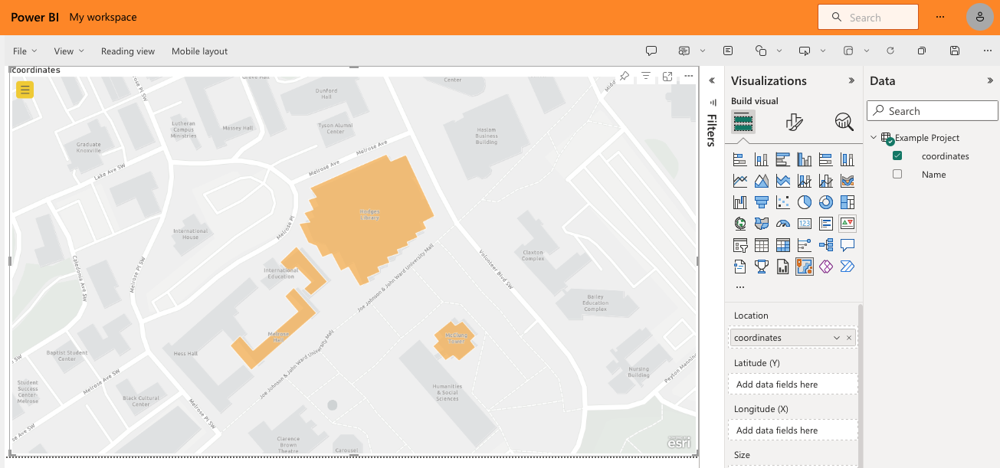

#open necessary libraries
library(sf)
library(tidyverse)
#read in kml file
map_geo <- sf::st_read("Example Project.kml")
#spit it back out again as a GeoJSON
map_geo %>%
st_zm() %>% #remove the Z dimension from the object
st_write("Example Project.geojson")In Power BI it’s fairly easy to generate a map with location data that fits typical geographical boundaries like countries or states. If you want to draw a very custom map, it becomes more difficult. This is a way I figured out that seems much more complicated than it needs to be. I’m sure (I hope) there is an easier way that I’ll discover later.
Currently Power BI has multiple built-in mapping visualizations. You can draw custom shapes with the “Shape Map”, but it will be on a blank white background. I wanted my map to lay on top of a typical street map. The ArcGIS visualization makes this possible.
If you have an ArcGIS license, you can draw your custom maps within ArcGIS itself and access them via Power BI. This didn’t work for me for a couple reasons: 1. I didn’t have a license, and 2. I don’t know if you can connect your data in Power BI to reference layers you create within ArcGIS. So that makes I need to find a way to have custom location data within Power BI formatted in such a way that it is parseable by the ArcGIS visualization. After lots of digging (ArcGIS’s documentation is lacking), I found that custom shapes can be read from Power BI data in an “EsriJSON format”.
First, I drew my map in Google Earth. Start a new project (it works best in Chrome), and click “New feature” -> “Draw line or shape”.

Trace out your shape, and give it a name. When you’ve finished drawing your map, go to the “…” menu and click “Export as KML file”. I don’t really know what a KML is, but from what I can tell it’s a map format that Google likes to use.
Next, the KML file needs to be converted to a form of JSON called GeoJSON. Again, don’t ask me what a GeoJSON is, but from context clues I’m gonna say it’s a JSON for geographic data.
GeoJSON isn’t good enough for finicky ArcGIS/Power BI however, so we need to do a bit more wrangling to create a table that has shape data in an EsriJSON format. This website and this question on the ArcGIS forum helped me figure out what this mysterious EsriJSON needed to look like.
#open necessary libraries
library(jsonlite)
library(tidyverse)
#read in geojson file
list_json <- read_json("Example Project.geojson")
#wrangle into EsriJSON format
df_parsed <- list_json$features %>%
map_dfr(.f = function(lst_elm) {
lst_elm %>%
enframe() %>%
pivot_wider()
}) %>%
unnest_wider(properties) %>%
select(-type) %>%
unnest_wider(geometry) %>%
mutate(coordinates = unlist(coordinates, recursive = FALSE)) %>%
mutate(coordinates = map(coordinates, toJSON, digits = 20)) %>%
mutate(coordinates = as.character(coordinates)) %>%
mutate(coordinates = str_replace(coordinates, "\\]$", '\\]\\}')) %>%
mutate(coordinates = str_replace(coordinates, "\\[", '\\{"rings": \\[')) %>%
mutate(coordinates = str_replace_all(coordinates, "\\],\\[", ","))
#print csv with EsriJSON column
write_csv(df_parsed, file = "Example Project.csv")Finally, load this csv file into your Power BI report, put an ArcGIS visualization on your report canvas, and use the coordinates column in the “Location” field to create your custom map.

If you create relationships between this table and other data in your model, then you can overlay more data on this map via coloring, sizing, and tooltips.
That’s it! Easy! I’m gonna go take a nap.